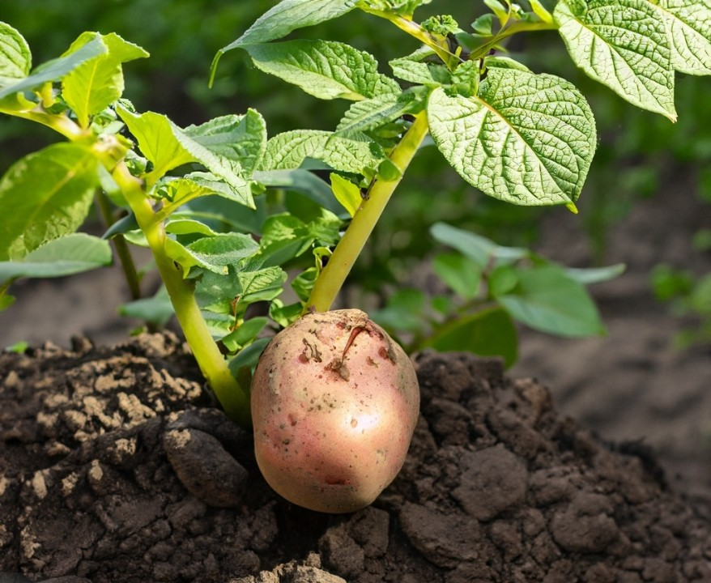

Plant Disease Classification
This project is to detect the plant disease early to decrease the plant's production
loss by taking preventive measures. We have used Convolutional Neural
Networks to extract the features of the leaf and to make the deep learning model.
|
 |
 |
Weather Forecasting
Project aims to develop a weather forecasting model using a hybrid approach that combines
Convolutional Neural Networks (CNN) and Long Short-Term Memory (LSTM) algorithms.The objective
of the project is to enhance the accuracy of weather predictions by incorporating both spatial
and temporal dependencies in the model.
|
Lane Detection
It is a intelligent and efficient lane detecting system using deep learning. Our model will
use the libraries like tensorflow and keras which will help it to learn the different
conditions like the rural roads, urban roads, unmarked lanes , steep curves and variable
visibility due to the climatic conditions.
|
 |
 |
Secured File Storage
The main aim of our project is encryption of the data so that no third party applications ,
algorithm can’t access it .
|
B2B Payment Prediction
The aim of this project predicts the future payment dates that should be paid by the customer. I used Supervised
learning and Regression method to estimate the Payments of Vendor. I have created a Random
Forest Regression model to get the best accuracy for my model. For the front end part of the
project i ahve used React.js and also Material UI.
|
 |